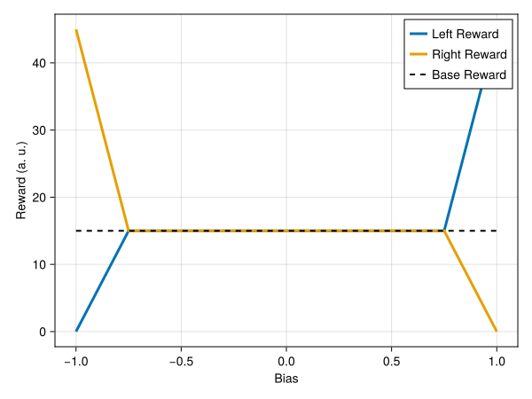

Autobias Correction
The autobias correction algorithm available in the current project changes the reward amount available in each lateral poke (in case of a successful trial) dynamically based on the bias of the animal (as defined below).
If this feature is active, the autobias correction algorithm will only take effect if the performance of the last \(n\) trials is below a certain threshold. The reward amounts available in the side pokes will depend on the base reward (\(r_\text{base}\)), the cutoff bias (\(c\)) and the slope multiplier (\(\lambda\)), where \(c \in [0, 1]\) and \(\lambda \geq 0\).
With that said, the reward amount available in the left poke is given by:
\(r = r_\text{base} \frac{1 + \text{Bias}}{1 - c}, \text{Bias} \leq - c\)
\(r = r_\text{base}, -c < \text{Bias} < c\)
\(r = r_\text{base} (1 + \lambda \frac{c - \text{Bias}}{c - 1}), \text{Bias} \geq c\)
And the reward amount available in the right poke is given by:
\(r = r_\text{base} (1 + \lambda \frac{c + \text{Bias}}{c - 1}), \text{Bias} \leq - c\)
\(r = r_\text{base}, -c < \text{Bias} < c\)
\(r = r_\text{base} \frac{1 - \text{Bias}}{1 - c}, \text{Bias} \geq c\)
The figure below is an illustrative plot of the reward given at each of the lateral pokes as a function of the bias of the animal (in the x-axis). To make this plot, it was chosen the \(r_\text{base} = 15\), \(c = 0.75\) and \(\lambda = 2\).

Bias
In this project, bias was defined as follows:
\(\text{Bias} = \frac{\sum_{i = 0}^{n - 1} \text{Chosen Side}_i}{n}\)
In other words, the bias is defined as the sum of the sides the animal chose in the last \(n\) trials divided by those \(n\) trials. The value of Chosen Side is -1 if left, 1 if right and 0 if the animal didn't pick a side in a given trial.
The advantage of this definition is that the bias will always be a value between -1 and 1.
How to use the autobias correction feature?
To configure a session to use the autobias correction feature, the autobias_correction.use_correction parameter of the animal.yml file must be set to true. Additionally, the remaining parameters related to this feature should be configured (see the following example).
autobias_correction:
use_correction: true
window: 25
cutoff_bias: 0.75
performance_threshold: 0.8
slope_multiplier: 2
An example of an animal.yml file with the autobias correction feature configured is shown below.
# yaml-language-server: $schema=../src/config/schemas/animal-schema.json
animal_id: ANIMAL0000
batch: batch_name
session:
number: 1
duration: 02:00:00
experimenter: experimenter_name
type: 1
starting_trial_number: 1
starting_training_level: 1
last_training_level: 3
block_number: 1
sound:
pseudo_random_side: false
max_side: 8
fixation_time:
opto_onset_time:
min_value: 5
delta: 0.5
target: 100
sound_onset_time:
min_value: 5
delta: 0.5
target: 100
reward:
base_amount: 15
autobias_correction:
use_correction: true
window: 25
cutoff_bias: 0.75
performance_threshold: 0.8
slope_multiplier: 2